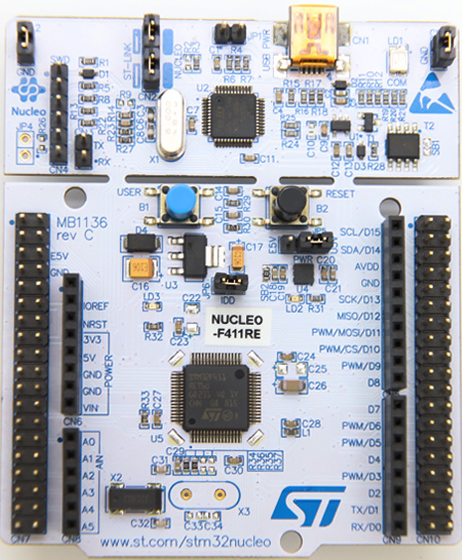
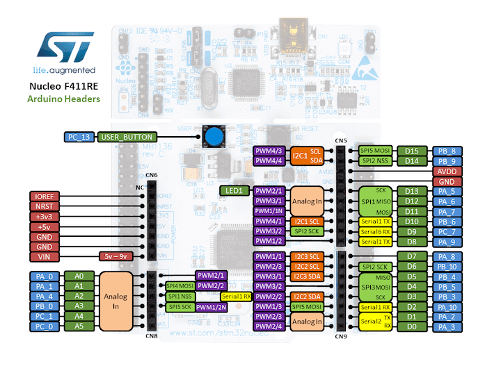
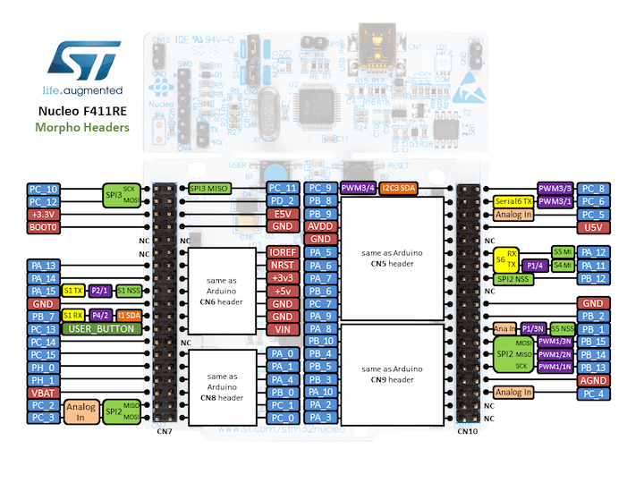
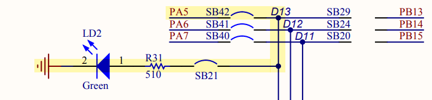
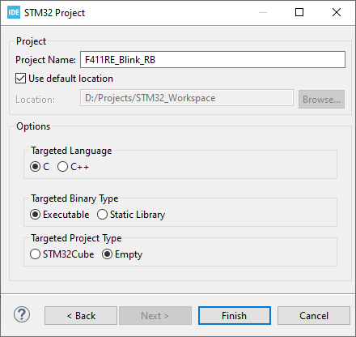
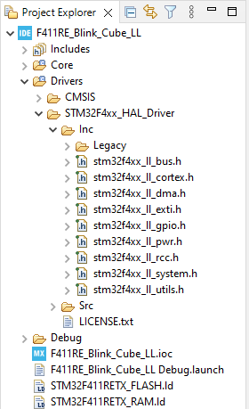
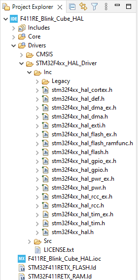

Blink is a very simple programming on embedded system, as it is just toggle an GPIO which drives an LED to notify user that it is running. This program is useful for checking project setup, compilation, programming as well as the hardware condition.
There are many topics on the internet discussing how to learn MCU though generated code or through self-written bare-metal/register-based code.
Here is my opinion to learn MCU which I’ve followed to get better understanding:
First, start with bare-metal/ register-based programming
This step requires you to read document carefully, to understand every bit of the hardware configurations and how they work.
At this step, you should work on small application only, on simple peripherals first.
Second, work with Low-level Library (CMSIS, LL)
At this step, you should use an abstraction layer to reduce your own code. This also makes your code portable, reusable, and usually more coverage rate. Low-Level Lib also uses register-based programming. You can use LL as reference for the first step.
Cortex Microcontroller Software Interface Standard (CMSIS) can be used at this stage. ST also provides LL Library for this purpose. ST LL can be integrated in Code generation.
Third, work with High-level Library (HAL)
In more complicated projects, Hardware-Abstraction Layer (HAL) is used for a quick development. HAL is preferred to use in production as it is built and test in long time, and of course, it reduces time-to-market. However, HAL is big, and make your application slower. It’s also hard to debug due to overriding or function pointers.
ST provides HAL Lib, and this lib is integrated with Code generation. Another open source HAL for STM32 is libopencm3.
You can use any STM32 board because this is just a very simple project. Refer to different types listed in Development boards and choose one suit for you.
I choose to use a Nucleo-64 board with STM32F411RE.
ST Nucleo-64 with STM32F411RE
Arduino Headers on Nucleo 64
Morpho Headers on Nucleo 64
The Green LED is connected to the pin PA5 of the MCU.
Schematic of the Green LED on STM3 Nucleo-64 board
Learn through example
Please note that the below examples just do a very simple thing, but ther are explained in details, so it may be quite difficult to follow if you are not familiar to programming MCU at low-level. Let see what we can learn.
In this example, we do not use any help from the CubeMX, so let choose Empty in project type option.
Select Empty project type
The project will be created with minimal number of files. You will see a startup file, some source files for System Calls, Memory Management; however, at this moment, you don’t need to understand them, because most of their content are dummy or default settings.
So, this is a difficult step. You don’t know where to start, do you? Go back to the Documents guide and start reading and find what we want. Read the Reference manual first!!!
Check the Memory Map to know the address of Peripherals:
Read the register description to know the offset and config value:
8 General-purpose I/Os (GPIO)
Each general-purpose I/O port has four 32-bit configuration registers (GPIOx_MODER, GPIOx_OTYPER, GPIOx_OSPEEDR and GPIOx_PUPDR), two 32-bit data registers (GPIOx_IDR and GPIOx_ODR) and a 32-bit set/reset register (GPIOx_BSRR).
8.3.5 I/O data bitwise handling
The bit set reset register (GPIOx_BSRR) is a 32-bit register which allows the application to set and reset each individual bit in the output data register (GPIOx_ODR).
When written to 1, bit BS(i) sets the corresponding ODR(i) bit. When written to 1, bit BR(i) resets the ODR(i) corresponding bit.
Writing any bit to 0 in GPIOx_BSRR does not have any effect on the corresponding bit in GPIOx_ODR. If there is an attempt to both set and reset a bit in GPIOx_BSRR, the set action takes priority
Using the GPIOx_BSRR register to change the values of individual bits in GPIOx_ODR is a “one-shot” effect that does not lock the GPIOx_ODR bits.
Do the same reading and understanding as we do with Clock registers, here are what we have to do:
Set Pin 5 on Port A to Output mode on bit [11:10] of the GPIOA_MODER register
To output HIGH value, set bit 5 of the GPIOA_BSRR register
To output LOW value, set bit 21 of the GPIOA_BSRR register
We know that MCU is running at 16 MHz (HSI), we can make a loop for delay as below. If each loop needs 10 instruction cycles, to delay 50 ms, the number of iterations is: \(\frac{0.05 \times 16000000}{10} = 80000\)
Note that this is a blocking delay, MCU is only doing the loop.
You can assemble all above pieces of code in the main.c file.
#include<stdint.h>/* Register Addresses*//* Clock */#define RCC_BASE 0x40023800UL#define RCC_AHB1ENR RCC_BASE + 0x30/* GPIO */#define GPIOA_BASE 0x40020000UL#define GPIOA_MODER GPIOA_BASE + 0x00#define GPIOA_BSRR GPIOA_BASE + 0x18/* delay counter */#define DELAY_MAX 50000intmain(void){/* turn on clock on GPIOA */*(uint32_t*)(RCC_AHB1ENR)|=(1<<0);/* set PA5 to output mode */*(uint32_t*)(GPIOA_MODER)&=~(1<<11);*(uint32_t*)(GPIOA_MODER)|=(1<<10);while(1){/* set HIGH value on pin PA5 */*(uint32_t*)(GPIOA_BSRR)|=(1<<5);for(uint32_ti=DELAY_MAX;i--;);/* set LOW value on pin PA5 */*(uint32_t*)(GPIOA_BSRR)|=(1<<(5+16));for(uint32_ti=DELAY_MAX;i--;);}}
There are some setting groups we need to check, right-click on the Project and select Properties:
Paths and Symbols
Includes are the directories to find headers, note that there is no extra included folder
Symbols are extra definitions enable/disable some blocks of code. Note the symbol STM32, STM32F4 and the target MCU STM32F411RETx are added automatically. For debug session, the symbol DEBUG is added too.
Source Location are the directories containing source code which is going to be compiled
Compilation Settings
MCU Settings:
the Floating Point Unit = FPv4-SP-D16; use -mfloat-abi=hard
System call: Minimal implementation --specs=nosys.specs
Generate Map file: -Wl,-Map={file}
Clean up unused sections: -Wl,--gc-sections
Linker file: -T"<file>"
Library: -lc -lm, these libraries will be search in a loop to check forward declaration and cross-dependency, so they are inside the marks -Wl,--start-group and -Wl,--end-group
The Common Microcontroller Software Interface Standard (CMSIS) is a vendor-independent abstraction layer for microcontrollers that are based on Arm Cortex processors. CMSIS defines generic tool interfaces and enables consistent device support. This layer is adopted by leading semiconductor companies, embedded software and tools vendors across the Arm architecture. This means you can find a CMSIS-Pack for your target MCU if the MCU’s vendor is registered with ARM.
Integrate the CMSIS to your project:
Download CMSIS Core, the latest version is CMSIS 5.
The filename, for example, is ARM.CMSIS.5.8.0.pack, you can unzip it as a normal zip file.
Copy the header files in ARM.CMSIS.5.8.0.pack/CMSIS/Core/Include to your project
Follow the same rule of reading the Reference Manual document which can be found in the Keil.STM32F4xx_DFP.2.16.0/Documentation folder, you will have to do the same steps of configuring clocks, GPIO. However, this time, you can use the definitions and macros written in the device header files. All registers name listed in the Reference Manual document are available to use.
Configure Clock
Use the RCC peripheral, set the bit RCC_AHB1ENR_GPIOAEN in the AHB1ENR register to enable clock for GPIOA.
RCC->AHB1ENR|=RCC_AHB1ENR_GPIOAEN;
Configure GPIOA
Use the GPIOA peripheral, set the field MODER8 to 01 in the register MODER to set pin PA5 as output.
You can assemble all above pieces of code in the main.c file.
#include<stdint.h>#include<stm32f4xx.h>/* delay counter */#define DELAY_MAX 50000intmain(void){/* turn on clock on GPIOA */RCC->AHB1ENR|=RCC_AHB1ENR_GPIOAEN;/* set PA5 to output mode */GPIOA->MODER&=~GPIO_MODER_MODE5_1;GPIOA->MODER|=GPIO_MODER_MODE5_0;while(1){/* set HIGH value on pin PA5 */GPIOA->BSRR|=GPIO_BSRR_BS_5;for(uint32_ti=DELAY_MAX;i--;);/* set LOW value on pin PA5 */GPIOA->BSRR|=GPIO_BSRR_BR_5;for(uint32_ti=DELAY_MAX;i--;);}}
Register-based
/* turn on clock on GPIOA */*(uint32_t*)(RCC_AHB1ENR)|=(1<<0);
Register-based CMSIS
/* turn on clock on GPIOA */RCC->AHB1ENR|=RCC_AHB1ENR_GPIOAEN;
/* set GPIOA to output mode */*(uint32_t*)(GPIOA_MODER)&=~(1<<11);*(uint32_t*)(GPIOA_MODER)|=(1<<10);
/* set GPIOA to output mode */GPIOA->MODER&=~GPIO_MODER_MODE5_1;GPIOA->MODER|=GPIO_MODER_MODE5_0;
while(1){/* set HIGH value on pin PA5 */*(uint32_t*)(GPIOA_BSRR)|=(1<<5);for(uint32_ti=DELAY_MAX;i--;);/* set LOW value on pin PA5 */*(uint32_t*)(GPIOA_BSRR)|=(1<<(5+16));for(uint32_ti=DELAY_MAX;i--;);}
while(1){/* set HIGH value on pin PA5 */GPIOA->BSRR|=GPIO_BSRR_BS_5;for(uint32_ti=DELAY_MAX;i--;);/* set LOW value on pin PA5 */GPIOA->BSRR|=GPIO_BSRR_BR_5;for(uint32_ti=DELAY_MAX;i--;);}
There are some setting groups we need to check, right-click on the Project and select Properties:
Paths and Symbols
Includes are the directories to find headers, note that there is no extra included folder
Symbols are extra definitions enable/disable some block of code. Note the symbol STM32, STM32F4 and the target MCU STM32F411RETx are added automatically. To use the header file stm32f4xx.h, you must add the definition STM32F411xE in the Project Symbols.
Source Location are the directories containing source code which is going to be compiled
Under the GPIO Configuration panel, take note the default settings for PA5:
GPIO Output Level: Low, this pin is at Low level at startup
GPIO Mode: Output Push-Pull, this pin is kept connected to the driven signal, read more in GPIO Output Modes
GPIO Pull-up/Pull-down: No Pull, because in Output Push-Pull mode, internal resistor does not take effect. Only in Output Open-Drain mode, Pull-Up resister can help to drive the pin at High level
Max Output Speed: Low, this is crew rate meaning how fast the signal can change its level
User label: LED, a name to use instead of the pin name PA5
Press Alt+K or click on menu Project → Generate Code.
The STM32F4xx_HAL_Driver with LL source code and the CMSIS driver are copied to the project folder.
CMSIS
No additional file is copied
Low-Level
LL files are copied to the project
The Clock Configs:
CMSIS
/* turn on clock on GPIOA */RCC->AHB1ENR|=RCC_AHB1ENR_GPIOAEN;
Low-Level
voidSystemClock_Config(void){LL_FLASH_SetLatency(LL_FLASH_LATENCY_0);while(LL_FLASH_GetLatency()!=LL_FLASH_LATENCY_0){}LL_PWR_SetRegulVoltageScaling(LL_PWR_REGU_VOLTAGE_SCALE1);LL_RCC_HSI_SetCalibTrimming(16);LL_RCC_HSI_Enable();/* Wait till HSI is ready */while(LL_RCC_HSI_IsReady()!=1){}LL_RCC_SetAHBPrescaler(LL_RCC_SYSCLK_DIV_1);LL_RCC_SetAPB1Prescaler(LL_RCC_APB1_DIV_1);LL_RCC_SetAPB2Prescaler(LL_RCC_APB2_DIV_1);LL_RCC_SetSysClkSource(LL_RCC_SYS_CLKSOURCE_HSI);/* Wait till System clock is ready */while(LL_RCC_GetSysClkSource()!=LL_RCC_SYS_CLKSOURCE_STATUS_HSI){}LL_Init1msTick(16000000);LL_SetSystemCoreClock(16000000);LL_RCC_SetTIMPrescaler(LL_RCC_TIM_PRESCALER_TWICE);}
The GPIO Configs:
CMSIS
/* set GPIOA to output mode */GPIOA->MODER&=~GPIO_MODER_MODE5_1;GPIOA->MODER|=GPIO_MODER_MODE5_0;
The low-layer (LL) drivers are designed to offer a fast light-weight expert-oriented layer which is closer to the hardware.
For the GPIO module, you should read the document UM1725 - Description of STM32F4 HAL and low-layer drivers, you will find an instruction:
To set/reset the level of a pin configured in output mode use LL_GPIO_SetOutputPin() or LL_GPIO_ResetOutputPin()
Now, blink the LED in the main while loop, note that, we also have a delay function LL_mDelay().
CMSIS
while(1){/* set HIGH value on pin PA5 */GPIOA->BSRR|=GPIO_BSRR_BS_5;for(uint32_ti=DELAY_MAX;i--;);/* set LOW value on pin PA5 */GPIOA->BSRR|=GPIO_BSRR_BR_5;for(uint32_ti=DELAY_MAX;i--;);}
There are some setting groups we need to check, right-click on the Project and select Properties:
Paths and Symbols
Includes are the directories to find headers, note the STM32F4xx_HAL_Driver and CMSIS
Symbols are extra definitions enable/disable some block of code. Note the symbol USE_FULL_LL_DRIVER and the target MCU STM32F411xE
There are also many other definitions such as HSI_VALUEHSE_VALUE for clock settings; DATA_CACHE_ENABLE, INSTRUCTION_CACHE_ENABLE, PREFETCH_ENABLE for pipeline settings;
Source Location are the directories containing source code which is going to be compiled
Press Alt+K or click on menu Project → Generate Code.
The STM32F4xx_HAL_Driver with HAL source code and the CMSIS driver are copied to the project folder.
Low-Level
LL files are copied to the project
HAL
HAL files are copied to the project
The Clock Configs:
Low-Level
voidSystemClock_Config(void){LL_FLASH_SetLatency(LL_FLASH_LATENCY_0);while(LL_FLASH_GetLatency()!=LL_FLASH_LATENCY_0){}LL_PWR_SetRegulVoltageScaling(LL_PWR_REGU_VOLTAGE_SCALE1);LL_RCC_HSI_SetCalibTrimming(16);LL_RCC_HSI_Enable();/* Wait till HSI is ready */while(LL_RCC_HSI_IsReady()!=1){}LL_RCC_SetAHBPrescaler(LL_RCC_SYSCLK_DIV_1);LL_RCC_SetAPB1Prescaler(LL_RCC_APB1_DIV_1);LL_RCC_SetAPB2Prescaler(LL_RCC_APB2_DIV_1);LL_RCC_SetSysClkSource(LL_RCC_SYS_CLKSOURCE_HSI);/* Wait till System clock is ready */while(LL_RCC_GetSysClkSource()!=LL_RCC_SYS_CLKSOURCE_STATUS_HSI){}LL_Init1msTick(16000000);LL_SetSystemCoreClock(16000000);LL_RCC_SetTIMPrescaler(LL_RCC_TIM_PRESCALER_TWICE);}
The Hardware Abstract Layer (HAL) is designed so that it abstracts from the specific peripheral memory mapping. But, it also provides a general and more user-friendly way to configure the peripheral, without forcing the programmers to now how to configure its registers in detail.